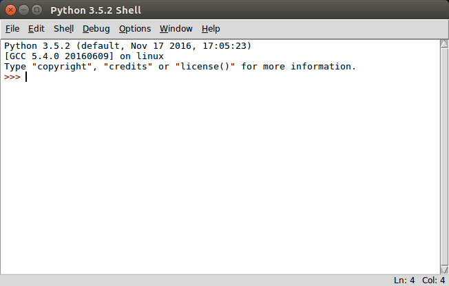

Introdução¶
As leituras e vídeos sugeridos nessas notas de aula, em geral, contém (muito?) mais tópicos do que os vistos durante a aula presencial. Os tópicos não vistos na aula serão cobertos em algum momento mais oportuno.
A maior parte das leituras são links para sessões específicas do livro interativo Como pensar como um Cientista da Computação.
Tópicos¶
- Computação e computadores:
Livro¶
Além destas notas e das notas de aula, a bibliografia sugerida para este curso, é o livro How to Think Like a Computer Scientist - Learning with Python: Interactive Edition do Runestone Interactive Project de Brad Miller e David Ranum, Luther College. Uma tradução deste livro para o português é Como Pensar Como um Cientista da Computação - Aprendendo com Python: Versão Interativa.
Neste início recomendamos que seja lido o capítulo Capítulo 1: O Caminho do Programa do livro Como Pensar Como um Cientista da Computação.
Vídeos¶
Frequentemente recomendaremos que sejam assistidos alguns vídeos que acreditamos que auxiliarão o seu aprendizado. Os vídeos sugeridos serão frequentemente do cursos:
- Introdução à Computação com Python do Departamento de Computação do IME-USP no Coursera e
- Python para Zumbis do professor Fernando Masanori da FATEC de São José dos Campos. Estes vídeos aparerem com “[Zumbis]” no título.
Para este início sugerimos que sejam assistidos os vídeos.
Primeiros passos¶
Para realizar os exercícios desse curso você vai precisar de um computador com Python 3.x instalado. Caso ele não possua Python (ou a versão adequada), instale o Python 3.x em sua máquina seguindo as instruções em: Como instalar Python 3.x em seu computador.
Abra o ambiente de desenvolvimento de programas em Python chamado IDLE, e uma janela como a abaixo deve aparecer.
Depois que a janela do IDLE aparecer, experimente digitar após o prompt
(>>>) do Python shell algumas expressões aritméticas como:
>>> 2 + 3 * 4
para usar o Python shell como uma calculadora, e também algumas expressões relacionais que comparam 2 valores ou resultados de expressões como:
>>> 21 == 3 * 7
Experimente executar comparações usando os operadores relacionais abaixo:
Operador Descrição == igual != diferente > maior < menor >= maior ou igual <= menor ou igual
Variáveis permitem armazenar resultados. Procure utilizar nomes que sejam significativos para facilitar a leitura de seus programas, como:
>>> pi = 3.14159
>>> 2 * pi
6.28318
O IDLE é uma excelente ambiente de desenvolvimento integrado (IDE = Integrated development environment) para escrever programas simples e poderá ser utilizado durante todo o curso para escrever as soluções dos problemas propostos. No entanto, o uso de uma ferramenta um pouco mais poderosa, como o Spyder, embora mais difícil de usar inicialmente, pode facilitar o desenvolvimento das soluções dos problemas mais complexos.
Recomendamos também o uso do Python Shell que é o ambiente interativo criado na tela inicial do IDLE. Ele é muito útil para testar trechos pequenos de código sempre que tiver alguma dúvida com relação a um comando ou aspecto do Python.